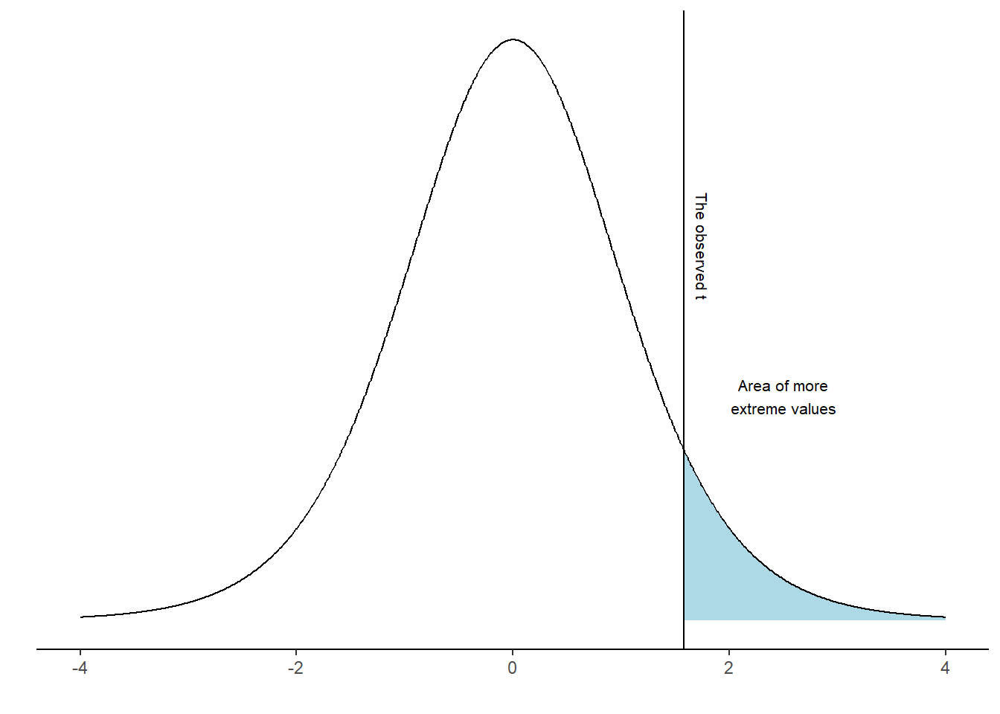
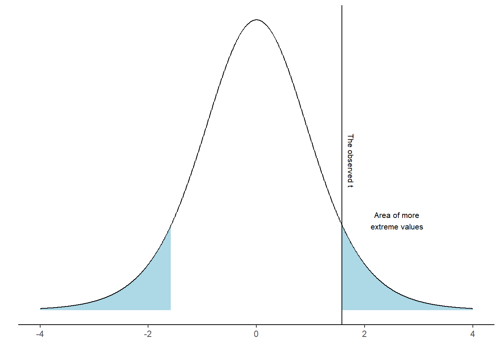
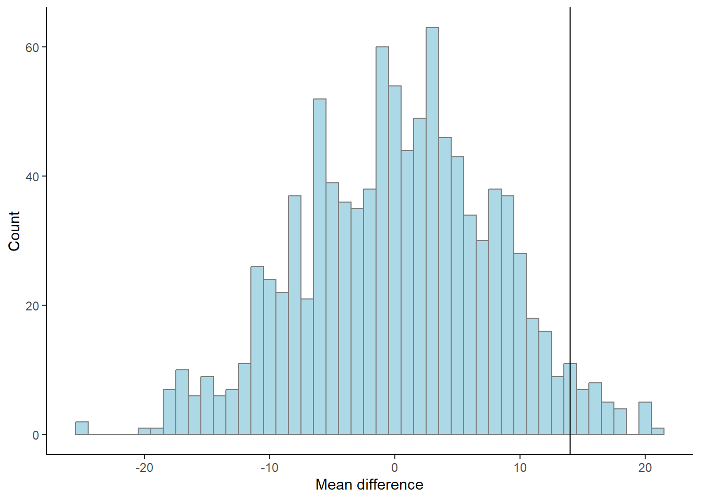
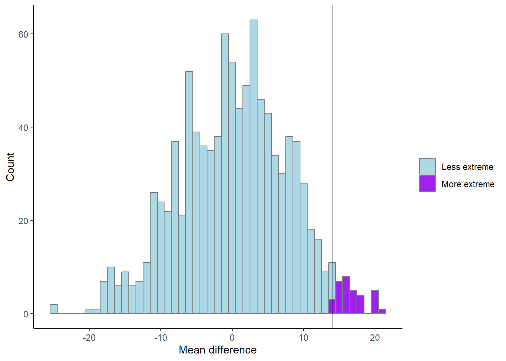
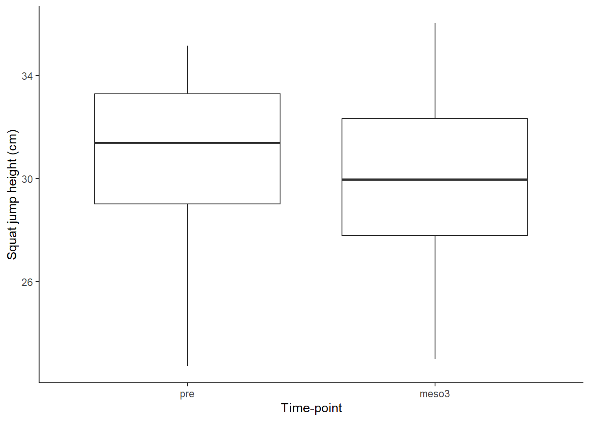
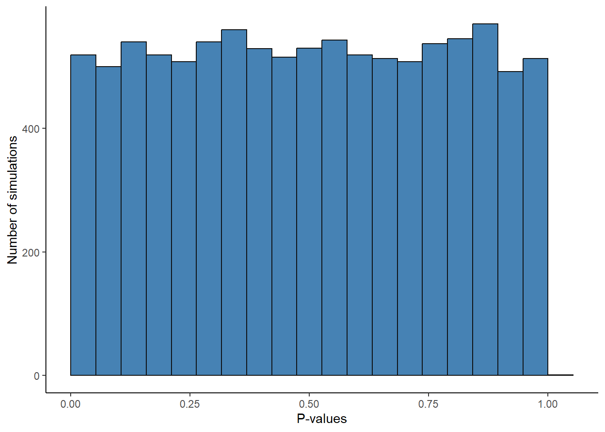

Consider the sampling distribution. This is an imaginary distribution of e.g. sample means gathered from repeated sampling from a population of numbers. Let’s say that our null-hypothesis, H0, is that the mean of a population is zero. We draw a sample of \(n=10\) and it turns out that it is not zero, it is about 1. We calculate the standard deviation of our sample, it is 2.
Based on these number, we can calculate a sample statistic, a t-value
\[t = \frac{m - \mu}{s/\sqrt{n}}\]
where \(m\) is our sample mean, \(\mu\) is the hypothesized mean, \(s\) is our sample standard deviation and \(n\) is the sample size. \(t\) is the sample statistic. As we have covered in the previous chapter, we do not know the true variation in the imaginary distribution of samples, \(s\) is our best guess of the population standard deviation. Using \(s\) we can model the imaginary sampling distribution.
Figure 17.2: An imaginary sampling distribution with a t-statistic.
Using the calculated t-value we may answer questions like: “If the null-hypothesis is true, how often would we observe our t-value, or an even more extreme value?” We can calculate this from the imaginary distribution as the area under the curve above our value.
Code
library(tidyverse)ggplot(data =data.frame(x =c(-4, 4)), aes(x)) +stat_function(fun = dt, args =list(df =9),xlim =c(4, (1-0) / (2/sqrt(10))),geom ="area", fill ="lightblue") +stat_function(fun = dt, n =1000, args =list(df =9)) +ylab("") +scale_y_continuous(breaks =NULL) +geom_vline(xintercept = (1-0) / (2/sqrt(10))) +annotate("text", x =1.75, y =0.25, label ="The observed t", size =2.8, angle =-90) +annotate("text", x =2.5, y =0.15,size =2.8, label ="Area of more\nextreme values") +labs(x ="") +theme_classic()t <- (1-0) / (2/sqrt(10))p <-pt(t, df =10-1, lower.tail =FALSE)

Figure 17.3: An imaginary sampling distribution with a t-statistic.
In R, this area can be calculated using the pt() function:
t <- (1-0) / (2 / sqrt(10))
pt(t, df = 10-1, lower.tail = FALSE)
It turns out that 7% of the distribution can be found in the blue shaded area. We have now completed a one-sample t-test. However, we have to look again at our null-hypothesis which states \(H_0 = 0\). There are two ways to disprove this hypothesis. We may find out that the value is lower or higher than 0. To account for both possibilities we calculate a “two sided p-value”. In practice we calculate the area under the curve above and below values corresponding to our observed distance from 0 (Figure 17.4).
2 * pt(t, df = 10-1, lower.tail = FALSE)
Code
library(tidyverse)ggplot(data =data.frame(x =c(-4, 4)), aes(x)) +stat_function(fun = dt, args =list(df =9),xlim =c(4, (1-0) / (2/sqrt(10))),geom ="area", fill ="lightblue") +stat_function(fun = dt, args =list(df =9),xlim =c(-4, -(1-0) / (2/sqrt(10))),geom ="area", fill ="lightblue") +stat_function(fun = dt, n =1000, args =list(df =9)) +ylab("") +scale_y_continuous(breaks =NULL) +geom_vline(xintercept = (1-0) / (2/sqrt(10))) +annotate("text", x =1.75, y =0.2, label ="The observed t", angle =-90, size =2.8) +annotate("text", x =2.6, y =0.12, label ="Area of more\nextreme values", size =2.8) +labs(x ="") +theme_classic()p <-2*pt(t, df =10-1, lower.tail =FALSE)

Figure 17.4: An imaginary sampling distribution with a t-statistic and a two-tailed test agaionst the null hypothesis.
As the area under the curve in the blue area is 14.83% of the distribution we may make a statement such as: “If the null-hypothesis is true, our observed value, or a value even more distant from 0 would appear 14.83% of the times upon repeated sampling”.
We can not really reject the null hypothesis as the result of our test is (our t-value, or a more extreme value) is so commonly found if the \(H_0\) distribution is true.
You sample a new mean from \(n=10\) of 1.2, the standard deviation is 2.1. Calculate the t-statistic and the p-value with the \(H_0 = 0\).
A possible solution
t <- (1.2-0) / (2.1/sqrt(10))p <-2*pt(t, df =10-1, lower.tail =FALSE)
Side note: Printing numbers in R: Sometimes, a ridiculous number appear in your console such as \(4.450332e-05\). This is actually \(0.00004450332\) written in scientific notation. e-05 can be read as \(10^{-5}\). Rounding numbers in R is straight forward. Just use round(4.450332e-05, digits = 5) to round the number to 5 decimal points. However, you will still see the number in scientific notation. If you want to print the number with all trailing zeros you can instead use sprintf("%.5f", 4.450332e-05). This function converts the number into text and print what you want. The “%.5f” sets the number of decimal points to 5. This is confusing, I know!
17.1p-values from two sample comparisons
In a two sample scenario, we can model the null-hypothesis using re-shuffling of the data.
We sample two groups, one group has done resistance-training, the other group endurance training. We want to know if you get stronger if you do strength training as compared to endurance training. We measure the groups after an intervention. They were similar prior to training so we think that it is OK to measure the post-training values of 1RM bench press.
We can simulate the null-hypothesis (\(H_0\)) by removing the grouping and sample at random to two groups. Read the code below and try to figure out what it does.
Code
set.seed(123)results <-data.frame(m =rep(NA, 1000))for(i in1:1000){# Here we combine all observations all.observations <-data.frame(obs =c(strength.group, endurance.group)) %>%# based on a random process each iteration of the for-loop assign either endurance or strength to each individualmutate(group =sample(c(rep("strength", 10), rep("endurance", 10)), size =20, replace =FALSE)) %>%group_by(group) %>%summarise(m =mean(obs)) # calculate the difference in means and store in the results data frame results[i, 1] <- all.observations[all.observations$group =="strength", 2] - all.observations[all.observations$group =="endurance", 2] }results %>%ggplot(aes(m)) +geom_histogram(fill ="lightblue", color ="gray50", binwidth =1) +geom_vline(xintercept = mean.difference) +labs(x ="Mean difference", y ="Count") +theme_classic()

Figure 17.5: Results of differences between groups using a permutation (or reshuffeling) procedure. The black line represents the
What does the graph above show (fig-permutation-test)? As the reshuffle process was done 1000 times we can count the number of means more extreme than the mean that we did observe.
p <-length(results[results$m > mean.difference,]) /1000
The above code calculates the proportion of mean differences greater than the observed difference that occurred when we re-shuffled the groups by chance. The number of total re-shuffles that are greater than our observation corresponds to 3.3%.
Code
# An illustration of the aboveresults %>%mutate(extreme =if_else(m > mean.difference, "More extreme", "Less extreme")) %>%ggplot(aes(m, fill = extreme)) +geom_histogram(color ="gray50", binwidth =1) +scale_fill_manual(values =c("lightblue", "purple")) +geom_vline(xintercept = mean.difference) +labs(x ="Mean difference", y ="Count", fill ="") +theme_classic()

Figure 17.6: Results of differences between groups using a permutation (or reshuffeling) procedure. The black line represents the observed difference.
We have now calculated the proportion of values more extreme than the observed. This would represent a directional hypothesis
\[H_A: \text{Strength} > \text{Endurance}\] We can account for the fact that the endurance group could be stronger than the strength group with the figure below (Figure 17.7). Try to figure out what the code does and what has changed from above.
Figure 17.7: Results of differences between groups using a permutation (or reshuffeling) procedure. The black line represents the observed difference. More extreme permutations compared to our observed value are highlighted.
The proportion of more extreme values, irrespective of direction, compared to our observed value is 6.9%.
Above we have calculated p-values by comparing our results to a reference distribution of what could be reality if the null-hypothesis is true. This is how we should understand p-values.
This is a good place to stop and reflect:
At what level of p are you comfortable rejecting a null-hypothesis?
When planning a study we decide on a level of evidence needed to reject the null. If you would have planned a study, how do you motivate a certain level of evidence?
17.2 More p-values
In the example above where we used the reshuffling technique (also called a permutation test), we are limited by the number of times we reshuffle our data and the size of the groups to produce a valid p-value. As long as the data are approximately normally distributed, we can use a t-test instead. As outlined above, this test uses an imaginary sampling distribution and compare our results to a scenario where the null-hypothesis in true.
To test against the null hypothesis that the means of the groups described above are equal we would use a two-sample t-test. In R we could perform thsi test with the following code.
t.test(x = strength.group, y = endurance.group, paired =FALSE, var.equal =TRUE)
Two Sample t-test
data: strength.group and endurance.group
t = 1.9451, df = 18, p-value = 0.06756
alternative hypothesis: true difference in means is not equal to 0
95 percent confidence interval:
-1.121613 29.121613
sample estimates:
mean of x mean of y
78 64
The output of the two-sample t-test contains information on the test statistic t, the degrees of freedom for the test and a p-value. It even has a statement about the alternative hypothesis. We get a confidence interval of the mean difference between groups.
Does the 95% confidence interval say anything about the level of evidence needed to reject the null? Has somebody already decided for you? See in the help-file for the t-test (?t.test) and see if you can change the confidence interval to correspond to your level of evidence.
The t-test is quite flexible, we can do one-sample and two-sample t-tests. We can account for paired observation, as when the same participant is measured twice under different conditions.
In the one-sample case, we test against the null-hypothesis that a mean is equal to \(\mu\) where we specify the mu in the function.
If we have paired observations we set paired = TRUE, each row in such case must correspond to the same individual.
When we assume that the groups have equal variance (var.equal = TRUE) this corresponds to the classical two-sample case. A more appropriate setting is to assume that the groups do not have equal variance (spread), this is the Welch two-sample t-test (var.equal = FALSE).
By saving a t-test to an object we can access different results from it. To see what parts we can access we may use the names function which gives the names of the different parts of the results.
To access the confidence interval, we would use ttest$conf.int.
17.3t-test examples
In the cycling data set we might want to know if the difference between pre- and post-data in squat jump is more or less than 0. Assuming that we use the same participants, this is a paired t-test.
We need to wrangle the data to set up our test.
Code
library(tidyverse); library(exscidata)data("cyclingstudy")# Prepare the datasj.max <- cyclingstudy %>%select(subject, timepoint, sj.max) %>%filter(timepoint %in%c("pre", "meso3")) %>%pivot_wider(names_from = timepoint, values_from = sj.max) # calculate the t-test, paired datasj.ttest <-t.test(sj.max$pre, sj.max$meso3, paired =TRUE)# plot the data to see corresponding datasj.figure <- sj.max %>%pivot_longer(names_to ="timepoint",values_to ="sj.max", cols = pre:meso3) %>%mutate(timepoint =factor(timepoint, levels =c("pre", "meso3"))) %>%ggplot(aes(timepoint, sj.max)) +geom_boxplot() +theme_classic() +labs(x ="Time-point", y ="Squat jump height (cm)")# create a summary statisticsj.summary <- sj.max %>%pivot_longer(names_to ="timepoint",values_to ="sj.max", cols = pre:meso3) %>%group_by(timepoint) %>%summarise(m =mean(sj.max, na.rm =TRUE), s =sd(sj.max, na.rm =TRUE))# Plot the figuresj.figure

Figure 17.8
The above analysis can be summarised as: “Squat jump height was on average higher at pre- compared to post-intervention measurements (30.8 (SD: 3.2) vs. 29.9 (3.3), Figure 17.8), this did not lead to rejection of the null-hypothesis (level of α=0.05) of no difference between time-points (t(18)=1.79, p=0.091, 95% CI: -0.16, 1.94)”.
The figure adds to the analysis by guiding the reader to what is actually compared. We could improve the figure, maybe by adding the connection between repeated data points.
The interpretation above has “two levels”, first I describe that there actually is a difference in means between the time points, this is a statement about the data. Then we use the t-test to make a statement about the population. Notice that we use the standard deviation when describing the data and the t-statistic and confidence intervals when describing the our best guess about the population.
We also above state the level of α needed to reject the null hypothesis. This is our target error rate for rejecting the null-hypothesis in cases when we should not do so.
17.4 Error rates
Up to now we have not explicitly talked about the level of evidence needed to reject the null-hypothesis. The level of evidence needed is related to the nature of the problem. We can make two types of errors in classical frequentist statistics. A type I error is made when we reject the null when it is actually true. A type II error is when we fail to reject the null and it is actually false.
If we do not care that much about making a type I error we might be in a situation where a research project might conclude that a intervention/device/nutritional strategy is beneficial and if not, there is no harm done. The side effects are not that serious. Another scenario is when we do not want to make a type I error. For example if a treatment is non-effective, the potential side effects are unacceptable. In the first scenario we might accept higher error rates, in the second example we are not prepared to have a high false positive error rate as we do not want to recommend a treatment with side effects that is also ineffective.
A type II error might be serious if an effect is beneficial but we fail to detect it, we do not reject the null when it is false. As we will discuss later, error rates are connected with sample sizes. In a study where we have a large type II error because of a small sample size we risk not detecting an important effect.
Type I error might be thought of as the long run false positive rate. If we would have drawn samples from a population with a mean of 0 and test against the \(H_0: \mu = 0\). A pre-specified error rate of 5% will protect us from drawing the wrong conclusion but only to the extent that we specify. We can show this in a simulation by running the code below.
Code
set.seed(1)population <-rnorm(100000, mean =0, sd =1)results <-data.frame(p.values =rep(NA, 10000))for(i in1:10000){ results[i, 1] <-t.test(sample(population, 20, replace =FALSE), mu =0)$p.value}# filter the data frame to only select rows with p < 0.05false.positive <- results %>%filter(p.values <0.05) %>%nrow()p <- false.positive /10000# should be ~ 5%
When the null-hypothesis is true we will have equally many p-values in the range 0 to 0.05 as between 0.05 and 0.1 and so on. The p-values have an uniform distribution. We can confirm this by looking at the distribution of p-values in our simulation above (fig-null-hypothesis-p).
Code
results %>%ggplot(aes(p.values)) +geom_histogram(bins =20, boundary =0, fill ="steelblue", color ="gray5") +theme_classic() +labs(x ="P-values", y ="Number of simulations")

Figure 17.9: P-values from 10000 t-test of samples from a population where the null-hypothesis is true.
17.5 P-values and confidence intervals
Transparent reporting of a statistical test include estimates and “the probability of obtaining the result, or a more extreme if the null was true” (the p-value). Estimates may be given together with a confidence interval. The confidence interval gives more information as we can interpret the magnitude of an effect and a range of plausible values of the population effect. Sometimes the confidence interval is large, we may interpret this as having more uncertainty.
In the cycling study we may test against the null-hypothesis that there is no effect of training on tte (time to exhaustion). Try to answer these questions by preparing and doing the test.
What kind of t-test is suitable for testing pre vs. meso3 data in the tte variable?
What level of evidence do you think is suitable for the test, what is your level of statistical significance?
How do you interpret the p-value and confidence interval.
Below is example code to set up the test, try to set up your test on your own before looking at the code.
Code
library(tidyverse)library(exscidata)# Prepare the datatte.data <- cyclingstudy %>%select(subject, timepoint, tte) %>%pivot_wider(names_from = timepoint, values_from = tte) %>%print()tte.ttest <-t.test(tte.data$meso3, tte.data$pre, paired =TRUE)# The point estimate tte.ttest$estimate# Get the confidence interval tte.ttest$conf.int# Get the p-valuette.ttest$p.value
Discussing the above questions
The t-test suitable for a paired comparisons of two set of values is the paired-sample t-test.
The 5% level for statistical significance is hard imprinted in science. Why? Well, tradition! Ideally we should justify our choice of the level required to reject the null-hypothesis. Such justification could be done based on the consequences of knowing if an effect that we are studying is likely to be true in the real world (rejecting the null hypothesis). For example, if the consequence of recommending a treatment based on a study has potential negative consequences we want to keep the rate of calling false positive to a minimum.
The p-value can be interpreted as the probability of obtaining a result as extreme or even more extreme than the observed value. The confidence interval is an interval containing the true population value in 95% of theoretical repeated studies.